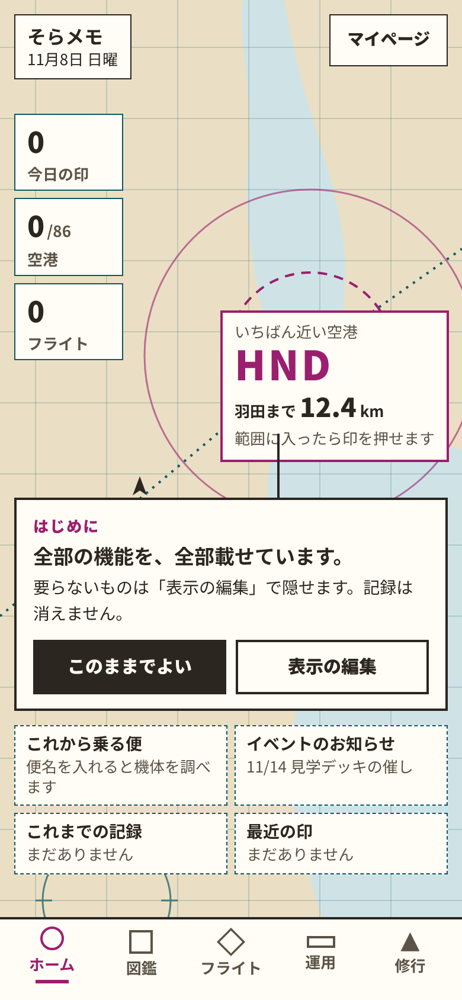
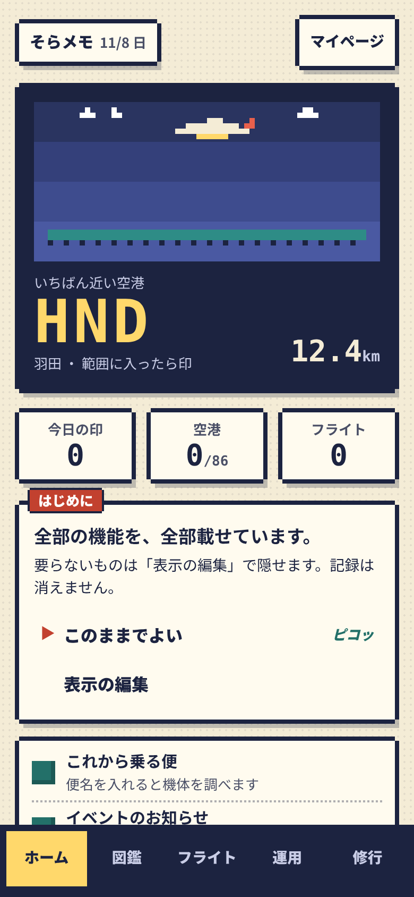
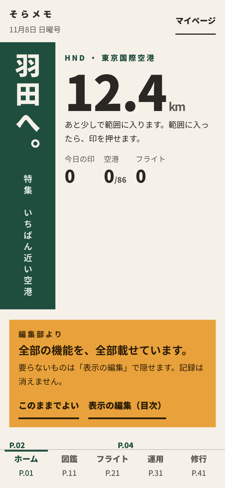
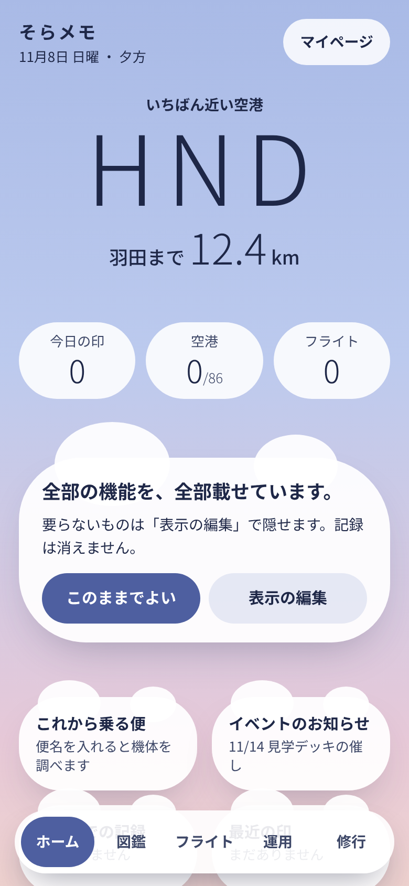
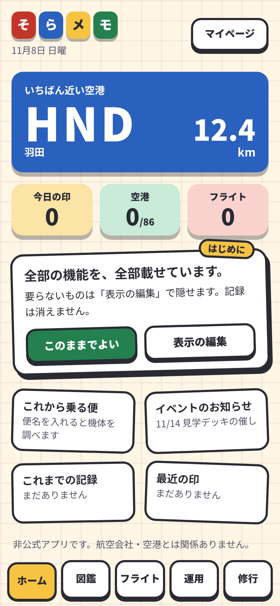

決まりを外した実験（11/8・8案）
本人の依頼「一回、守ってほしい決まりをなかったことにして案を作ってみて」と「決まりなしの案をもっと見たい」への実験。デザインの原則と見た目の決まりを今回だけ外して、全部乗せとフィルターの画面を8つの方向で作った（A〜C は5画面、D〜H はホームと表示の編集の2画面）。アプリには入れない。取り入れたい所があれば、決まりを変えるかを本人が決める。報告は docs/pm/report-no-rules-1108.md。
8案を並べて比べる
上の段がホーム（はじめて・全部乗せ）、下の段が表示の編集（7こ隠したとき）。A〜C は11/8 19時の3案、D〜H は11/8 20時に足した5案。横に送って見る。
ホーム
 案A 搭乗券と手帳
案A 搭乗券と手帳 案B 夜の操縦席
案B 夜の操縦席 案C 大きな字のポスター
案C 大きな字のポスター
案D 航法図が主役
案E ドット絵の携帯ゲーム
案F 写真なしの旅行雑誌
案G 空のグラデーションと雲
案H シールと積み木表示の編集（7こ隠した）


案A 搭乗券と手帳
外した決まり：明朝体（見出し・本文）と等幅の数字／黒い罫線と点線のミシン目／角丸カード＋薄い影をやめて、四角い紙と黒いずらし影／ピルをやめて四角いボタンと手書きの ✓ 枠／ホームの地図とシートをやめて、搭乗券の半券と帳簿の行／タブ帯を手帳の見出しシール（インデックス）に
良い点：「しまう」の判とレシートで、隠しても記録が残ることが紙の手触りで伝わる
困る点：明朝体と罫線は小さい字で細く見え、情報の多い画面では重くなる


案B 夜の操縦席
外した決まり：画面全体を黒に／等幅の数字と、緑・水色・黄色・桃色の光る字（JAL赤・ANA青は使わない）／角丸カードをやめて四角い計器の枠／ピルをやめて押しボタン（入＝緑・切＝黄色の枠）とソフトキー／ホームの航空図をやめて、扇形の計器風の地図（近い空港を桃色）／案内板風は「一部だけ」の決まりを外し、数字は全部計器の字
良い点：夜の展望デッキでまぶしくない。押しボタンの入・切がはっきりしている
困る点：昼の屋外では黒い画面が見にくい。光る色が多く、大事な所が分かりにくい


案C 大きな字のポスター
外した決まり：大胆な余白の代わりに、120px の巨大な字で画面を埋める／黒い太線と細い罫線で区切る／角丸・影をなくし、全部まっすぐな四角／ピルをやめて四角を塗る・空けるで出す・隠す／ホームの地図をやめて、空港コードを見出しにした紙面／確認はシートでなく、画面全体をオレンジにする
良い点：遠くからでも読める巨大な数字。塗る・空ける四角は色に頼らず分かる
困る点：太線と巨大な字で1画面の情報が少なく、送る量が増える


案D 航法図が主役11/8 20時に追加
外した決まり：ホームの「地図とシート」のシートをなくし、画面全体を航法図にする／角丸カードと影をやめ、図の注記の四角と引き出し線で情報を置く／タブ帯を図の凡例の帯に／表示の編集は図の凡例（実線の記号＝出す、破線の記号＝隠す）／色は航法図の桃色・青緑・砂色
良い点：空港アプリらしさがいちばん強く、地図を開いたまま全部が読める。表示の編集の凡例は「図に出る・出ない」と結び付いて分かりやすい
困る点：地図の上に字を置くので、情報が増えると図がうるさくなる。注記の四角が多いと押せる所が見分けにくい
案E ドット絵の携帯ゲーム11/8 20時に追加
外した決まり：角丸カードと影をやめ、段々の角のドット枠に／ゴシックの細い字をやめ、等幅の数字と太い字だけ／色は紺・クリーム・珊瑚・青緑の4色だけ／ピルをやめて「▶」のカーソルと［ON］［‐‐］の札／押したときの「ピコッ」などの効果音の文字を小さく添える
良い点：印集めの「集める楽しさ」が出る。表示の編集が「設定メニュー」に見え、出す・隠すが［ON］［‐‐］ではっきりする
困る点：経営の数字や運用の細かい表には合いにくい。大人の利用者や撮る人には子どもっぽく見えるおそれ。ドットの字は持てないので、字はふつうの字で代わりにしている
案F 写真なしの旅行雑誌11/8 20時に追加
外した決まり：角丸カードと影をやめ、色の面と段組で区切る／横書きだけの決まりを外し、見出しを縦書きに／ホームの地図とシートをやめ、「特集 羽田」の見開き／タブ帯を誌面の柱（ページの端の見出し）に／表示の編集は「目次」：出す＝掲載、隠す＝休載
良い点：「掲載・休載」の言葉で、隠しても記録は消えないことが自然に伝わる。読み物としての落ち着きがあり、大人向けに見える
困る点：縦書きと段組は、字が増えると組むのが手間（空港ごと・言葉の長さで崩れやすい）。素早く印を押す画面としては情報まで遠い
案G 空のグラデーションと雲11/8 20時に追加
外した決まり：白っぽい地と薄い影の決まりを外し、画面全体を夕方の空のグラデーションに／カードを雲の形（ふちのぼけた丸の集まり）に／数字は大きく太くの決まりを外し、細く大きく／JAL赤・ANA青を使わず、空の色だけ／表示の編集は、出す＝はっきりした雲、隠す＝霞んで小さくなった雲
良い点：いちばん柔らかく、毎日開いても疲れない。隠したものが「霞む」ので、消えたのではなく後ろにあると感じられる
困る点：時刻で空の色を変えたくなり、作る手間が増える。雲の形は字の量が増えると崩れ、細い数字は屋外で読みにくい
案H シールと積み木11/8 20時に追加
外した決まり：薄い影と控えめな色の決まりを外し、原色のぶ厚い積み木（下に濃い色の厚み）に／角丸カードを少し傾けたシールに／JAL赤・ANA青は控えめの決まりを外し、赤・青・黄・緑を全面に／表示の編集は「シール帳」：出す＝台紙に貼ったシール、隠す＝はがして白いふちだけ残した跡
良い点：手で触って並べる楽しさがあり、隠す・出すが「はがす・貼る」で体で分かる。並べ替え（公開のあと）にもそのままつながる
困る点：いちばん子どもっぽく、撮る人・修行の人には合わないおそれ。傾けたシールは字が多いと読みにくく、色が強いので長く見ると疲れる